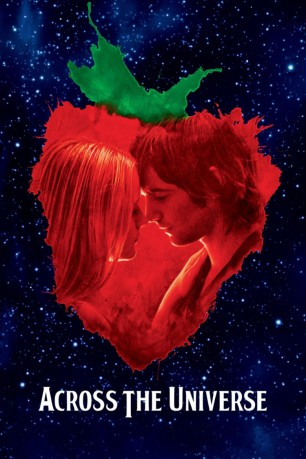
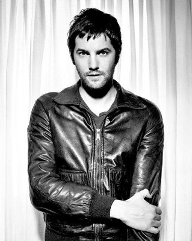
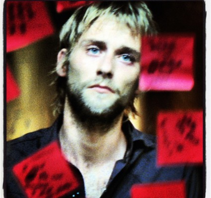
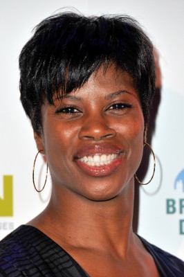
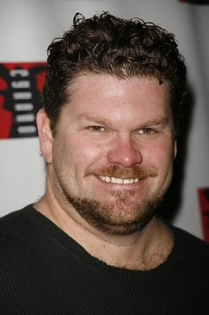
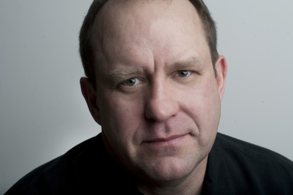

#1180 Across the Universe
Auszeichnungen: für 1 Oscars nominiert
 
 IMDB-Wertung: 7.4 / 10
IMDB-Wertung: 7.4 / 10  Metascore: 56
Metascore: 56 
Mitte der 60er Jahre: Auf der Suche nach seinem Vater verschlägt es den jungen britischen Arbeiter Jude (Jim Sturgess) in die USA an die Elite-Universität Princeton, wo sein Erzeuger als Hausmeister arbeitet. Dann lernt er eines Tages Max (Joe Anderson), einen aufmüpfigen Studenten kennen und dessen attraktive Schwester Lucy (Evan Rachel Wood), in die er sich verliebt. Das Trio geht zusammen nach New York und als Max für den Einsatz im Vietnamkrieg eingezogen wird, wird die junge Liebe durch unterschiedliche Auffassungen von Rebellion auf eine harte Probe gestellt...
Jahr: 2007
Dauer: 133 Minuten
FSK: 12
Land: USA Studio: Columbia PicturesTonspuren: DD5.1 - ,
Untertitel:
Auflösung: 720p (1280x528) Größe: 6717 MB
Genre: Drama, Fantasy, Musical, Liebe
Regisseur:  Julie Taymor
Julie Taymor
Drehbuch: Dick Clement, Ian La Frenais, Julie Taymor, Dick Clement, Ian La Frenais
Soundtrack: Elliot Goldenthal
Darsteller:
 Evan Rachel Wood als Lucy Carrigan
Evan Rachel Wood als Lucy Carrigan-  Jim Sturgess als Jude
-  Joe Anderson als Max Carrigan
- Dana Fuchs als Sadie
- Martin Luther als Jo-Jo
- T.V. Carpio als Prudence
- Spencer Liff als Daniel
- Michael Ryan als Phil
 Robert Clohessy als Wesley 'Wes' Huber - Jude's Father
Robert Clohessy als Wesley 'Wes' Huber - Jude's Father Bill Buell als Old Guy at Tavern
Bill Buell als Old Guy at Tavern- Ellen Hornberger als Julia Carrigan - Lucy's Sister
 Dylan Baker als Mr. Carrigan - Lucy's Father
Dylan Baker als Mr. Carrigan - Lucy's Father Linda Emond als Mrs. Carrigan - Lucy's Mother
Linda Emond als Mrs. Carrigan - Lucy's Mother Lynn Cohen als Grandmother Carrigan
Lynn Cohen als Grandmother Carrigan Bill Irwin als Uncle Teddy
Bill Irwin als Uncle Teddy- Jennifer Van Dyck als Daniel's Mother
- Timmy Mitchum als Jo-Jo's Brother
- Orfeh als Hooker
- Antonique Smith als Hooker
- Tracy Nicole Chapman als Hooker
-  Deidre Goodwin als Hooker
- Joe Cocker als Bum / Pimp / Mad Hippie
- Jacob Pitts als Rap Magazine Employee
- Staceyann Chin als Rap Magazine Employee
- Jeanine Serralles als Dani
-  Daniel Stewart Sherman als Cop at Wharf Warehouse
 Harry Lennix als Army Sergeant
Harry Lennix als Army Sergeant Logan Marshall-Green als Paco
Logan Marshall-Green als Paco James Urbaniak als Sadie's Manager
James Urbaniak als Sadie's Manager- Kathleen Early als SDR Worker
- Bono als Dr. Robert
- Daniel Ezralow als Mother Superior
- Kiva Dawson als Max's Girl
- Halley Wegryn Gross als Max's Girl
- Luther Creek als Prankster
- Arabella Holzbog als Prankster
- Christopher Youngsman als Prankster
- Eddie Izzard als Mr. Kite
- Tracy Westmoreland als Fillmore Manager
 Ron Cephas Jones als Black Panther
Ron Cephas Jones als Black Panther Salma Hayek als Singing Nurse
Salma Hayek als Singing Nurse- Mandy Gonzalez als Sadie's Singer
- Destan Owens als Sadie's Singer
- Cicily Daniels als Sadie's Singer
- Saycon Sengbloh als Sadie's Singer
-  Sam Kitchin als Sergeant on Rooftop
- Chris McGarry als Sergeant on Rooftop
- Frank Hopf als Door Officer at Strawberry Records
- Sarah Jayne Jensen als High School Girlfriend
- Michelle Loucadoux als High School Girlfriend
Datei: X:\2007(A-F)\Across the Universe (2007, FSK12, 1280x528).mkv seit 02.06.2015
Festplatte: HD 2007(A-Z)-2008(A-F)
 Es gibt insgesamt 65 Filme in der Gruppe '2007(A-F)'
Es gibt insgesamt 65 Filme in der Gruppe '2007(A-F)'